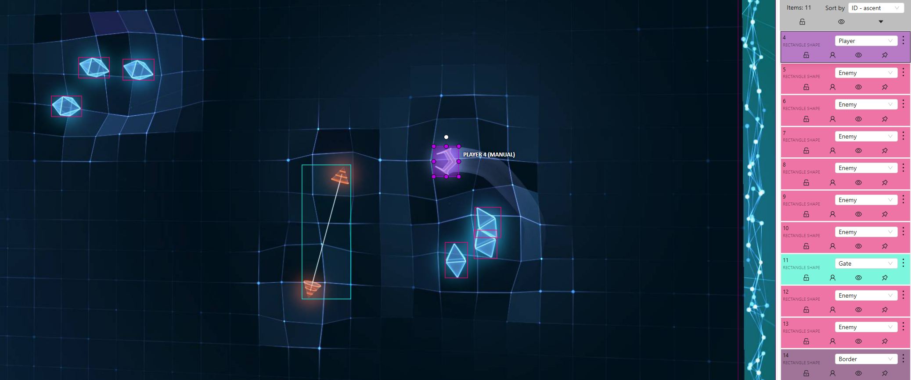
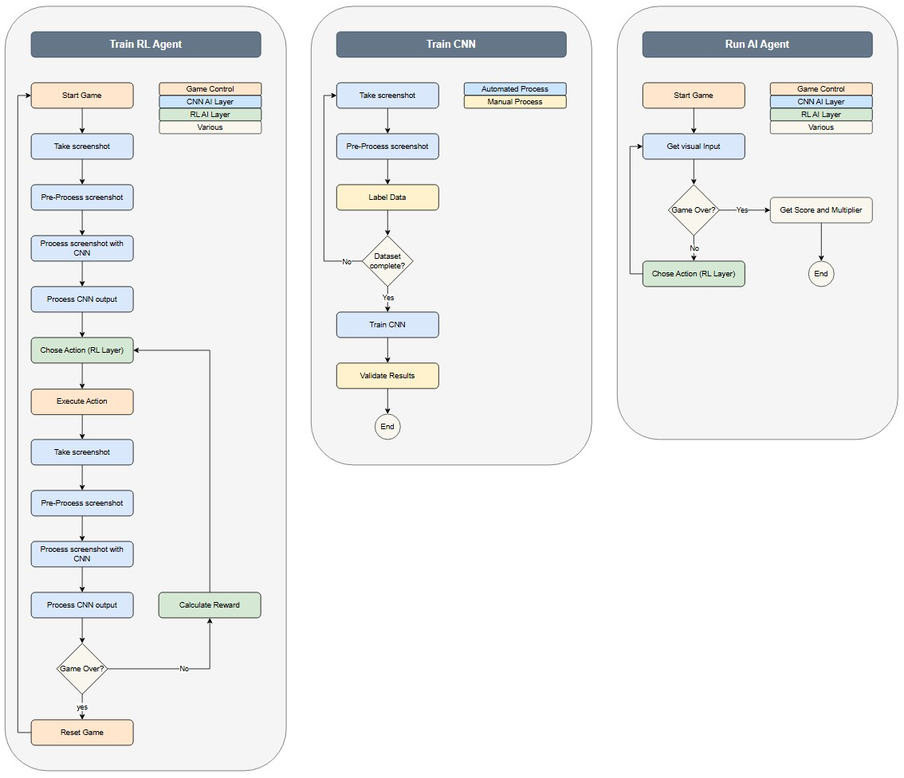

Project 7: AI-Powered Geometry Wars Agent
Introduction
Jump direclty to:
PART 1 - Data gathering and Feature Engineering for Training DataPART 2 - Object detection (Proof of Concept)
PART 3 - Segementation (Proof of Concept)
Background
This project aims to develop an artificial intelligence (AI) Agent capable of autonomously playing Geometry Wars. Geometry Wars is a popular arcade-style video game where players control a small spaceship within a rectangular arena. The game challenges players to navigate the arena while avoiding and triggering the destruction of enemies, which appear as geometric shapes such as triangles and circles. Points are earned by successfully eliminating these enemies, staying alive, and strategically maneuvering through the environment. Hence the name Geometry Wars.
Geometry Wars features multiple game modes, but for this project, we will focus on Pacifism Mode, which simplifies gameplay by limiting the player's controls and reducing overall complexity. In this mode, the player's spaceship can only navigate the arena without the ability to shoot. The primary objective is to strategically fly through gates, triggering their explosions to eliminate enemies and accumulate points. After destroying enemies small green geometrical forms will appear that act as multipliers for the score. The goal is to collect them alongside destroying enemies to increase the total game score. The game ends once the player touches any enemy.
To successfully navigate the game, the player must:
- Recognize its position within the game environment.
- Determine its position relative to other objects, such as walls and enemies.
- Identify its position in relation to gates that help the player to destroy the enemies.
- Determine the optimal path to pass through gates.
- Understand the available movement options (game controls) and their potential effects on the game.
- Move the Player figure on the game by providing control inputs via the controller.
How an AI could play the game autonomously
The image below provides a visual representation of how a Convolutional Neural Network (CNN) can detect key game elements in Geometry Wars: Pacifism Mode. In practice, the image may undergo preprocessing to reduce complexity before being analyzed by the CNN. This could include transformations such as converting to grayscale, resizing, or applying filtering techniques to enhance relevant features while minimizing unnecessary details (more details on this later). The CNN is responsible for identifying critical objects within the game environment, including the player spaceship, enemies, gates, and borders, by drawing bounding boxes around them. These detections must then be processed and converted into meaningful spatial data that the Reinforcement Learning (RL) Agent can interpret to make strategic movement decisions.
To be more specific the CNN's output will provide the Reinforcement Learning Agent bounding box coordinates for detected objects, which will be translated into numerical representations of their relative positions on the game screen. This transformation allows the RL Agent to understand the spatial relationships between the player and other game elements other in other words - the Agent will be able to see the game.
Once the Agent sees the the next step will be to take a decsion on what the next move should be and use the provided controller integration to send the commands to the game. Directly after the Agent input a screenshot will be taken and processed by the CNN. This second screenshot will be used to analyse the Agent's move and provide rewards based on the result.
This brings us to the most critical challenge for a successful implementation of the AI Agent is the design of an effective reward function. The reward function serves as the primary mechanism for guiding the Agent’s learning process by providing positive or negative feedback based on its actions. Proper reward shaping is essential to ensure the AI develops optimal strategies, balancing short-term survival with long-term objectives. Some points to concider are:
- Balancing Multiple Objectives: The AI must carefully balance multiple goals, such as avoiding enemies, navigating through gates, and maximizing survival time, ensuring that reward weighting does not result in excessive risk-taking or overly cautious behavior.
- Sparse vs. Dense Rewards: In the fast-paced environment of Geometry Wars, the AI must receive sufficiently frequent and meaningful rewards to accelerate learning without making them too trivial or redundant.
- Handling Dynamic Game Elements: The reward function must dynamically adapt to the game's ever-changing conditions without overfitting to specific patterns, allowing the AI to generalize effectively across different scenarios.
- Reward Conflicts: The AI must resolve conflicting objectives, such as staying close to gates to maximize rewards while minimizing collision risks, requiring a carefully balanced reward function that promotes strategic and risk-aware decision-making.
The table below shows a possible rewards map. Note that the rewards will need to be tweaked and adjusted during RL Agent training:
| Event | Reward Value | Description |
|---|---|---|
| Passing through a gate | +50 | Encourages using gates to eliminate enemies. |
| Staying alive over time | +5 per second | Rewards survival and avoiding enemies. |
| Moving closer to a gate | +10 | Encourages positioning for successful traversal. |
| Keeping a safe distance from enemies | +5 | Encourages strategic movement and caution. |
| Collision with an enemy | -100 | Harsh penalty to prevent reckless movement. |
| Getting too close to enemies | -5 | Discourages risky proximity to threats. |
| Hitting the border wall | -10 | Encourages staying within the safe area. |
| Staying idle too long | -10 | Prevents stagnant behavior, promoting activity. |
| Collecting Multipliers | +1 | Promoting the collection of multipliers on the field. |
Deliverables (High-Level Scope)
- Develop an AI system capable of playing Geometry Wars: Pacifism Mode autonomously.
- Utilize a CNN for object detection, identifying key elements like enemies, walls, and gates.
- Implement reinforcement learning to optimize movement strategies over time.
- Establish an automated pipeline to capture, process, and analyze game states in real-time.
- Implement a reward system that encourages strategic gameplay and survival.
- Automate game resets upon failure and continue training over extended periods.
Out of Scope
- Graphical User Interface (GUI) Development.
- Shooting Mechanics and Other Game Modes.
- Multi-Agent Interaction.
Activity Diagrams
*Note that the Training RL Agent activity is an infinite loop which will be manually monitored, adjustd and closed.
High-Level Design
Will be provided once the technology stack and approach are clear.
- Computer Vision: OpenCV, TensorFlow/PyTorch for CNN-based object detection.
- Reinforcement Learning: Deep Q-Learning (most probably PPO), experience replay, reward shaping.
- Game Control: Controller emulation with pyvjoy, vgamepad or similar libraries.
- Automation: Python-based environment reset and episode management.
- Performance Tracking: Logging frameworks for evaluating learning progress.